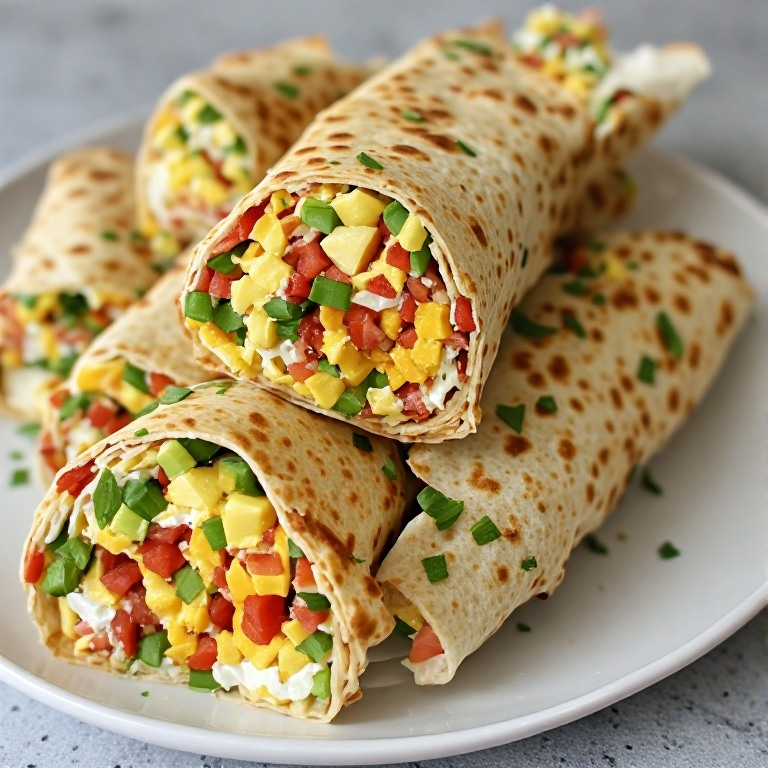

Loaded Breakfast Crunchwrap

Description
This is a delicious breakfast crunchwrap filled with eggs, cheese, and vegetables.
Ingredients
- 1 whole wheat tortilla
- 2 eggs
- 1 slice of cheese
- 1 cup of mixed vegetables
Steps
- Sauté the Vegetables: Heat a lightly oiled skillet over medium heat.
Add your mixed vegetables and cook until tender. Remove and set aside.
- Scramble the Eggs: In the same skillet, whisk and scramble the 2 eggs
to your desired firmness. Add salt and pepper to taste, then remove from the heat.
- Assemble the Crunchwrap: Lay your whole wheat tortilla flat on a cutting board or counter.
Add the scrambled eggs in the center, top with your sautéed veggies,
and lay your slice of cheese over the top.
- Fold the edges of the tortilla inward towards the center,
overlapping them to completely enclose the filling and create a hexagon or pouch shape.
- Toast: Lightly oil or butter your skillet again and heat it over medium-low heat.
Place the crunchwrap seam-side down so the folds seal together. Press down gently.
- Flip: Cook for 2 to 3 minutes until golden and crispy, then carefully flip to toast
the other side for another 1 to 2 minutes.
Home